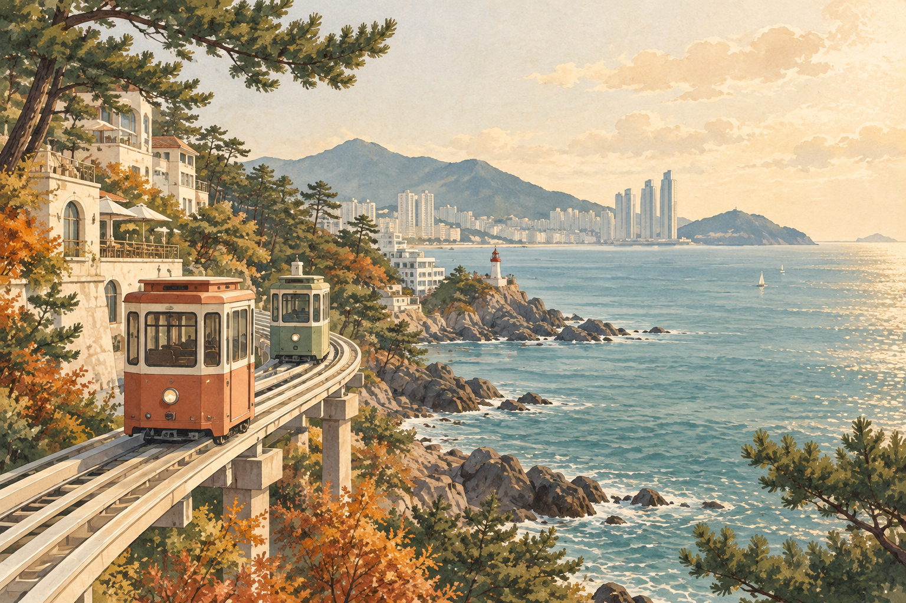

A little escape to the sea
把日子，
留給釜山。
沿著海岸慢慢走，喝杯咖啡、泡一場湯。
六天的風景，和剛剛好的旅行節奏。
翻開旅行手帳 ↗
09.30 — 10.056 DAYS / BUSAN, KOREA

TRAVEL DATES9/30（三）— 10/5（一）
OUR STAYS沙上 → 海雲台 → 西面
TRAVEL MOOD看海・放鬆・慢慢逛
The itinerary
每天，都有一點期待
Before we go
出發前，再看一眼
勾選狀態會儲存在這台裝置的瀏覽器中。